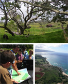

Hawaiian Islands
Hawaii Brochure
- 
- A brief overview of the work the Natural Capital Project has done on land use planning in Hawaii (Download pdf)
InVEST Scenarios Case Study: Hawaii, USA

- An overview of how scenarios were used for land-use decision making in Hawaii (Download pdf)
Hawai'i's Natural Capital
- Food, Energy & Natural Security Hawai'i is confronting a land crisis, with economic, demographic, environmental forces driving unsustainable changes that make people more vulnerable to inevitable shocks. The state imports over 90 percent of its food. The islands have, at any moment, a seven-day food supply for a resident population of 1.3 million and 6.5 million visitors annually. The same vulnerability exists in energy, with imported oil (and coal) comprising nearly 95 percent of consumption. The state has experienced great losses in natural capital, with more endangered species lost than any other in the U.S.
- Private Farms and Ranchlands Opportunity exists for securing natural capital, and enhancing food and energy security, on private lands. Grazing lands, for example, comprise nearly a quarter of the State's land area. If well managed, grazing lands reduce the risk of wildfires, control sedimentation, recharge groundwater, sequester carbon, and suppress the establishment and spread of invasive species while supporting native wildlife. Farms and ranches are vital to food and potentially energy security, while also preserve scenic beauty, tourism, and cultural heritage values.
- Innovative Approaches How can Hawai'i integrate natural capital values for food, energy and environmental security into attractive business models supported by policy? The approaches being pioneered in this state offer important lessons globally.
Natural Capital Project in Hawai'i
Mapping a sustainable future on the island of O'ahuWith a rapidly growing population and intensifying pressures on land and water, Hawai'i is a microcosm of forces at play globally. This island state is grappling with major challenges of food and energy security, unemployment and rural decline, and the imminent threat of climate change. Leaders in public and private sectors recognize the urgent need for new approaches to confront these interrelated societal issues. The Hawaiian state government passed a House Concurrent Resolution on Ecosystem Services in 2006 and a Climate Bill -the second state to do so in the U.S.- in 2007.
In support of these policies, the Natural Capital Project was invited to assess alternative business models for making agricultural production more sustainable in both economic and biophysical terms, while meeting the state's ecosystem service goals and, specifically, its carbon emissions targets. We convened large landowners, the Hawaiian Electric Company, the state water utility, conservation organizations, and other stakeholders to develop and analyze practical scenarios involving reforestation and payments to landowners for carbon sequestration and other services. We presented these to the Hawai'i State Legislature in 2009.
Meanwhile, the state's largest private landowner, and the largest trust in the United States, Kamehameha Schools, became interested in applying the approaches we were developing together to their iconic landholding on the North Shore of O'ahu. We engaged in a 2-year, iterative process of community involvement, analysis, and decisions by Kamehameha Schools, that culminated in a very innovative ecossytem-based management plan, and swift action to implement it.
Landowners looking for smart, sustainable business models
Development pressure is leading to rising land prices. Landowners in farming, ranching, and forestry are looking for new business models that are financially viable and ecologically sustainable to secure the long-term value of their land for future generations. Creating financial incentives for ecosystem services is key to diversifying rural economic opportunities and securing natural capital. We brought together buyers and sellers for a pilot carbon offset project to achieve state-mandated emissions reductions. This effort focused on restoring native koa forest for its suite of economic, ecological, and cultural values including carbon sequestration, water supply benefits, biodiversity conservation, and high-value timber.
Using InVEST to Create a Balanced Approach to Development
Leaders increasingly call for integrating ecosystem service values into important societal decisions, yet there remain few demonstrations of this approach in practice. We quantified ecosystem service values to help the largest private landowner in Hawai`i, Kamehameha Schools, design a land-use development plan that balances multiple private and public values on its 10,600 ha land holding on the North Shore of O`ahu.
We used the InVEST software tool to evaluate the environmental and financial implications of seven planning scenarios. Qualitative observations were also incorporated to account for the myriad cultural services of this iconic island landscape. The scenarios encompassed contrasting land-use combinations to achieve greater security in food and energy and other benefits such as included biofuel feedstocks, food crops, forestry, livestock, and residential development. All scenarios had positive financial return relative to the status quo. However, tradeoffs existed between carbon storage and water quality, as well as between environmental improvement and financial return. Based on this analysis and community input, Kamehameha Schools is implementing a plan to support diversified agriculture and forestry.
The formal mission of Kamehameha Schools is to balance environmental, economic, cultural, educational, and community values. Yet, despite the best-in-practice methods, the land trust was not finding it easy to turn this mission into something tangible. "Intuitively, you know what will be good for the environment, but that was all just based on faith," said the regional asset manager for the trust, Giorgio Caldarone. "We couldn't really quantitatively understand the trade-offs."
In many cases there isn't an easy win-win solution. The analysis we conducted made tradeoffs explicit so that purposeful decisions could be reached. The ultimate plan received the American Planning Association's 2011 National Planning Excellence Award for Innovation in Sustaining Places. Kamehameha School's property is now a thriving food farm, with construction of a wind farm underway, along with small scale forestry and biofuels projects in the works.
Updates From the Field
InVEST Workshop with Kamehameha Schools Held in Honolulu October 8-11, 2007
The Natural Capital Project team and collaborators from the National Center for Ecological Assessment and Synthesis (NCEAS) met with Kamehameha Schools to launch on-the-ground ecosystem services mapping and modeling, using InVEST. This helped us to illuminate the linkages, trade offs, and potential outcomes of 10 alternative land management scenarios on 26,000 acres for carbon sequestration, agricultural production, hydrological services, non-timber forest products, cultural and educational services, and biodiversity.
Results
Developed business models for conservation, to enable private ranchers to restore native forests while attracting revenue and sustaining livelihoods.
Mapped and valued ecosystem services, using our software tool InVEST. We worked with the Land Assets Division of Kamehameha Schools, the largest private landowner in Hawai'i, to help them create a land-use plan that balanced their economic, educational, environmental, cultural and community related objectives.
Initiated the design of a state carbon sequestration program, focused on the restoration of native forest. The program brought together potential buyers and sellers from across the state in the context of Hawaii's climate bill and had the added benefit of protecting endangered species and ecosystems services.
Award-winning development: Our analysis and InVEST outputs for Kamehameha Schools contributed to its receipt of the 2011 National Planning Excellence Award for Innovation in Sustaining Places by the American Planning Asociation. Development on O'ahu island was recognized for its land-use and inclusive decision- making.
In The News
Paradise Found: Paying ranchers to restore Hawaii's
great forests
Stanford StoryBank, April
20, 2009
“‘Partly as a result of the EVP [Woods
Institute Environmental Venture Project Grant] and a series
of concurrent, related efforts, the InVEST software system has been
developed for mapping and valuing natural capital,’ Daily explained.
‘We're now testing and refining the software for major resource
decisions in landscapes around the world—in China, Colombia, Ecuador,
Tanzania, California, Hawaii, and Oregon. There is tremendous demand
for this tool and approach to guide strategic investment in natural
capital. The time is ripe in both the business and policy arenas.’”
Land Conservation Efforts Offer Financial Rewards for
Cattle Ranchers, Study Finds
Stanford Report, June 14,
2006
“Making conservation pay is a critical step toward encouraging
restoration of private, working lands, the authors concluded. ‘Finding
economically viable means of reforesting degraded pastureland is
relevant far beyond Hawaii, particularly in the tropics.’”
Publications
Restoring native forest understory: The influence of ferns and light in a Hawaiian experiment
Gould, R.K.; H. Mooney; L. Nelson; R. Shallenberger; G.C. Daily
Sustainability. March 2013, 5(3): 1317-1339.
Integrating ecosystem-service tradeoffs into land-use decisions
Goldstein, Joshua H.; Giorgio Caldarone; Thomas Kaeo Duarte; Driss Ennaanay; Neil Hannahs; Guillermo Mendoza; Stephen Polasky; Stacie Wolny; Gretchen C. Daily
PNAS. April 23, 2012, Vol. 109(19), pp 7565-7570.
Integrating conservation and development in the field: implementing ecosystem service projects
Tallis, Heather; Rebecca Goldman; Melissa Uhl; Berry Brosi
Frontiers in Ecology and the Environment. February 2009, Vol. 7(1): 12-20.
The Natural Capital Project, Kamehameha Schools, and InVEST: Integrating Ecosystem Services into Land-Use Planning in Hawai`i
Goldstein, Joshua H.; Giorgio Caldarone; Chris Colvin; T. Ka`eo Duarte; Driss Ennaanay; Kalani Fronda; Neil Hannahs; Emily McKenzie; Guillermo Mendoza; Kapu Smith; Stacie Wolny; Ulalia Woodside;
Gretchen C. Daily
TEEBcase. 2010. Download from www.eea.europa.eu/teeb
The Emission-Reduction Potential of Native Forest Restoration in Hawai`i
Conte, Marc N.; Christian Giardina; Neil Hannahs; James B. Friday; James S. Greenwell Edited by Daily, G.C.; J.H. Goldstein; and J. Kaulukukui.
Not Peer-reviewed: Report to the State of Hawai'i Greenhouse Gas Emissions Reduction Task Force Honolulu, HI. August 14, 2009.
InVEST Scenarios Case Study: Hawaii, USA
Links
The Nature Conservancy's Hawai'i Program
Hawai'i Grazing Lands Conservation Initiative
Hawai'i Cattleman’s Council (HCC)
Hawai'i Department of Land and Natural Resources
Government Incentive Programs for Tree-Planting or Forest Management on Private Lands in Hawai'i
Hawai'i Association of Watershed Partnership
Contact
Becky Chaplin-Kramer
Lead Scientist